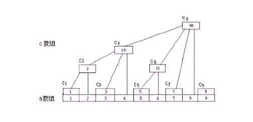
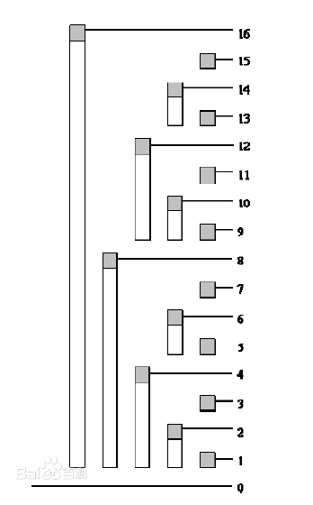
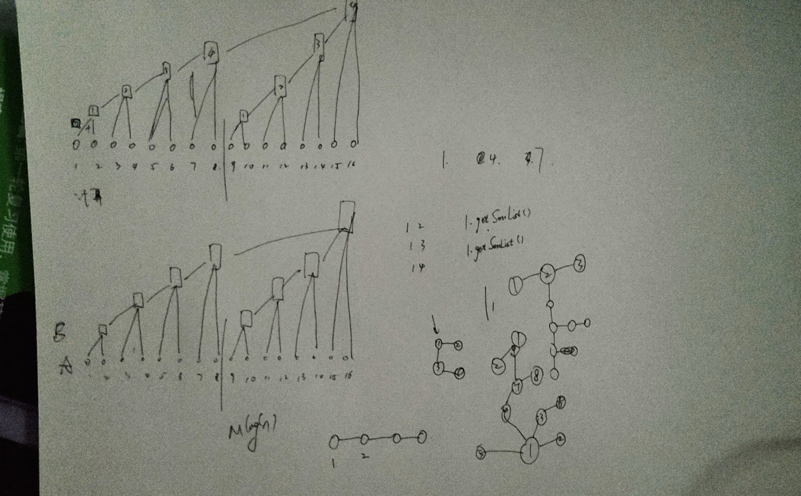

在试图解决苹果树下摘苹果的ACM题目，想要学习怎么用Java表示多叉树的时候，突然发现了这个算法，使用二分法来计算大数，且效率很高。在看到它的实现原理瞬间，着实感到惊艳。
一、树状数组是干什么的？
平常我们会遇到一些对数组进行维护查询的操作，比较常见的如，修改某点的值、求某个区间的和，而这两种恰恰是树状数组的强项！当然，数据规模不大的时候，对于修改某点的值是非常容易的，复杂度是O(1)，但是对于求一个区间的和就要扫一遍了，复杂度是O(N)，如果实时的对数组进行M次修改或求和，最坏的情况下复杂度是O(MN)，当规模增大后这是划不来的！而树状数组干同样的事复杂度却是O(MlgN)，别小看这个lg，很大的数一lg就很小了，这个学过数学的都知道吧，不需要我说了。
申明一下，看下面的文章一定不要急，只需要看懂每一步最后自然就懂了。
二、树状数组怎么干的？
先看两幅图，下面的说明都是基于这两幅图的，左边的叫A图吧，右边的叫B图：
 

是不是很像一颗树？对，这就是为什么叫树状数组了～先看A图，a数组就是我们要维护和查询的数组，但是其实我们整个过程中根本用不到a数组，你可以把它当作一个摆设！
c数组才是我们全程关心和操纵的重心。先由图来看看c数组的规则，其中c8 = c4+c6+c7+a8，c6 = c5+a6……先不必纠结怎么做到的，我们只要知道c数组的大致规则即可，很容易知道c8表示a1～a8的和，但是c6却是表示a5～a6的和，为什么会产生这样的区别的呢？或者说发明她的人为什么这样区别对待呢？
答案是，这样会使操作更简单！看到这相信有些人就有些感觉了，为什么复杂度被lg了呢？
可以看到，c8可以看作a1～a8的左半边和+右半边和，而其中左半边和是确定的c4，右半边其实也是同样的规则把a5～a8一分为二……继续下去都是一分为二直到不能分，可以看看B图。
怎么样 ？是不是有点二分的味道了？对，说白了树状数组就是巧妙的利用了二分，她并不神秘，关键是她的巧妙！